Is Ignorance Truly Bliss? Relationship between Education, Gender & Happiness
1. Project Overview and Scope
The phrase “Ignorance is bliss is a perspective that most of us have come across at least once, and sometimes even found meaningful. Naturally, individuals may have developed and educated themselves regardless of their formal educational background, gaining the ability to view life from different perspectives. However, in this study, the concept of ‘ignorance’ that I aim to focus on is independent of such interpretations. Instead, it refers to the relationship between a person’s level of education and their happiness, as well as how this relationship differs between men and women.
Problem Definition: Life satisfaction among individuals may vary depending on factors such as gender and education level. Therefore, it is necessary to conduct an analysis to examine the direction and magnitude of this interaction and to observe how happiness levels change based on individuals’ gender and educational background. The aim of this study is to reveal whether there is a significant relationship between educational attainment,gender and happiness levels in this context.
2. Data
2.1 Data Source
In this study, data obtained from the following links conducted by the Turkish Statistical Institute (TURKSTAT) has been used.
“education” dataset: This dataset contains the number of individuals by gender and educational status for each province between 2008 and 2023.A small part of the dataset is shown below.
# A tibble: 6 × 8
Year Province Educational_Status Total Male Female Percentage_Male
<chr> <chr> <chr> <dbl> <dbl> <dbl> <dbl>
1 2023 ADANA Okuma yazma bilmeyen 58357 10083 48274 1
2 2023 ADANA Okuma yazma bilen fakat b… 219571 95506 124065 9.2
3 2023 ADANA İlkokul 441425 190047 251378 18.4
4 2023 ADANA Ortaokul veya dengi mesle… 384900 208582 176318 20.2
5 2023 ADANA İlköğretim 132788 80203 52585 7.8
6 2023 ADANA Lise veya dengi meslek ok… 484355 268172 216183 25.9
# ℹ 1 more variable: Percentage_Female <dbl>
“byeducation” dataset: This dataset contains the percentages of general happiness levels by educational status between 2004 and 2024. A small part of the dataset is shown below.
# A tibble: 6 × 7
Year Happiness_Level `No School Completed` `Primary School`
<dbl> <chr> <dbl> <dbl>
1 2004 Happy 54.4 57.7
2 2004 Neither happy nor unhappy 27 30.7
3 2004 Unhappy 18.6 11.6
4 2005 Happy 54 55.2
5 2005 Neither happy nor unhappy 27.8 31.8
6 2005 Unhappy 18.1 13.1
# ℹ 3 more variables: `Primary Education or Junior High School` <dbl>,
# `High School or Equivalent` <dbl>, `Higher Education` <dbl>
“bygender” data set: This dataset contains the percentages of general happiness levels by gender between 2003 and 2024. A small part of the dataset is shown below.
# A tibble: 6 × 5
Year Happiness_Level Total Male Female
<dbl> <chr> <dbl> <dbl> <dbl>
1 2003 Very happy 12 12.4 11.6
2 2003 Happy 47.6 45.7 49.4
3 2003 Neither happy nor unhappy 33.2 34.1 32.2
4 2003 Unhappy 5.6 6.2 5
5 2003 Very unhappy 1.7 1.5 1.8
6 2004 Very happy 9.3 8.4 10.2
2.3 Reason of Choice
Even in this century, the distinction between women and men is still evident in many areas in Turkey. Undoubtedly, educating individuals is the most effective way to change the position of women in society. And perhaps, in this way, a society that has educated itself reaches the most important value for a person: happiness.
2.4 Preprocessing
The datasets used in this study will be merged to facilitate the analysis and will be organized in a way that allows easy processing by the program. If needed during the later stages of the analysis, additional datasets may be incorporated into the study. Different preprocessing steps have been applied to each dataset. The specific modifications made to each dataset are listed below in bullet points.
The presence of missing values (NA) is examined, and necessary preprocessing steps are applied if they exist.
The education levels (“Educational_Status”) in the “education” dataset (10 levels) were aligned with those in the ‘byeducation’ dataset (5 levels).
Irrelevant information has been removed from the dataset to simplify it. For example, entries such as “Unknown” and “Total” in the “Educational_Status” column have been excluded.
#changes in education dataset#head(education)#str(education)sum(is.na(education))
[1] 0
education<- education |>filter(!Educational_Status %in%c("Bilinmeyen","Toplam"))|>mutate(Educational_Status =case_when( Educational_Status %in%c("Okuma yazma bilmeyen", "Okuma yazma bilen fakat bir okul bitirmeyen") ~"No School Completed", Educational_Status=="İlkokul"~"Primary School", Educational_Status %in%c("Ortaokul veya dengi meslek okulu", "İlköğretim") ~"Primary Education or Junior High School", Educational_Status=="Lise veya dengi meslek okulu"~"High School or Equivalent", Educational_Status %in%c("Yüksekokul veya fakülte", "Yüksek lisans ve üzeri") ~"Higher Education",TRUE~as.character(Educational_Status))) education<- education |>group_by(Year,Province,Educational_Status) |>summarise(Total=sum(Total,na.rm =TRUE),Male=sum(Male,na.rm =TRUE),Female=sum(Female,na.rm =TRUE),Percentage_Male=sum(Percentage_Male,na.rm =TRUE),Percentage_Female=sum(Percentage_Female,na.rm =TRUE),.groups ="drop" )education$Educational_Status<-factor(education$Educational_Status,levels=c("No School Completed","Primary School","Primary Education or Junior High School","High School or Equivalent","Higher Education"),ordered =TRUE) head(education) |>kbl() |>kable_styling(full_width =5)
Year: The year of the study (ranging from 2008 to 2023).
Province: Name of the province (81 provinces in total).
Educational_Status: Education level (“No School Completed,” “Primary School,” “Primary Education or Junior High School,” “High School or Equivalent,” “Higher Education”).
Total: Total number of individuals in a given year, province, and education level.
Male: Number of males in a given year, province, and education level.
Female: Number of females in a given year, province, and education level.
Percentage_Male: Percentage of males in a given year, province, and education level.
Percentage_Female: Percentage of females in a given year, province, and education level.
Descriptive statistics for variables are presented below.
summary(education)
Year Province
Length:6480 Length:6480
Class :character Class :character
Mode :character Mode :character
Educational_Status Total
No School Completed :1296 Min. : 681
Primary School :1296 1st Qu.: 42114
Primary Education or Junior High School:1296 Median : 86103
High School or Equivalent :1296 Mean : 190227
Higher Education :1296 3rd Qu.: 183118
Max. :16154476
Male Female Percentage_Male Percentage_Female
Min. : 257 Min. : 424 Min. : 0.00 Min. : 0.00
1st Qu.: 21807 1st Qu.: 19350 1st Qu.:12.70 1st Qu.:11.80
Median : 43320 Median : 41185 Median :19.80 Median :18.70
Mean : 95128 Mean : 95099 Mean :19.45 Mean :19.44
3rd Qu.: 91336 3rd Qu.: 91346 3rd Qu.:25.82 3rd Qu.:25.80
Max. :7930608 Max. :8223868 Max. :54.80 Max. :79.50
The presence of missing values (NA) is examined, and necessary preprocessing steps are applied if they exist.
The “byeducation” dataset is updated to include data from 2008 to 2023, in accordance with the ‘education’ dataset, which contains information for the same years.
The variable “Happiness_Level”, which indicates the level of happiness, is defined as a factor variable with three levels.
#changes in byeducation dataset#head(byeducation)#str(byeducation)sum(is.na(byeducation))
The variables and their corresponding value ranges in the finalized “byeducation” dataset are defined as follows:
str(byeducation)
tibble [48 × 7] (S3: tbl_df/tbl/data.frame)
$ Year : num [1:48] 2008 2008 2008 2009 2009 ...
$ Happiness_Level : Ord.factor w/ 3 levels "Unhappy"<"Neither happy nor unhappy"<..: 3 2 1 3 2 1 3 2 1 3 ...
$ No School Completed : num [1:48] 55.8 26.3 17.8 51.8 27.3 21 56.3 28.9 14.8 57.2 ...
$ Primary School : num [1:48] 54 31.8 14.2 52.5 32.8 14.7 60.5 29 10.6 61.1 ...
$ Primary Education or Junior High School: num [1:48] 55.3 31.7 12.9 56.1 32.3 11.6 61.6 27.6 10.8 64.4 ...
$ High School or Equivalent : num [1:48] 55.5 33.1 11.4 54.7 32.4 13 62.7 27.1 10.1 63.9 ...
$ Higher Education : num [1:48] 62.9 24.6 12.5 63.2 27.8 9 67.7 26.2 6.1 66.7 ...
Year: The study year (ranging from 2008 to 2023).
Happiness_Level: Levels of happiness (“Unhappy,” “Neither Happy nor Unhappy,” “Happy”).
No School Completed: The percentage of individuals with no formal education for a given year and happiness level.
Primary School: The percentage of individuals who completed primary school for a given year and happiness level.
Primary Education or Junior High School: The percentage of individuals who completed primary education or junior high school for a given year and happiness level.
High School or Equivalent: The percentage of individuals who completed high school or its equivalent for a given year and happiness level.
Higher Education: The percentage of individuals who completed university or higher education for a given year and happiness level.
Descriptive statistics for the variables are as follows:
summary(byeducation)
Year Happiness_Level No School Completed
Min. :2008 Unhappy :16 Min. :11.66
1st Qu.:2012 Neither happy nor unhappy:16 1st Qu.:16.40
Median :2016 Happy :16 Median :28.20
Mean :2016 Mean :33.33
3rd Qu.:2019 3rd Qu.:54.37
Max. :2023 Max. :63.54
Primary School Primary Education or Junior High School
Min. :10.10 Min. : 7.90
1st Qu.:14.18 1st Qu.:13.27
Median :32.25 Median :32.47
Mean :33.34 Mean :33.33
3rd Qu.:52.33 3rd Qu.:52.39
Max. :62.94 Max. :64.40
High School or Equivalent Higher Education
Min. : 8.10 Min. : 6.10
1st Qu.:13.36 1st Qu.:12.91
Median :33.03 Median :31.32
Mean :33.33 Mean :33.33
3rd Qu.:50.88 3rd Qu.:51.57
Max. :63.90 Max. :67.70
The presence of missing values (NA) is examined, and necessary preprocessing steps are applied if they exist.
The “bygender” dataset is updated to include data from 2008 to 2023, in accordance with the ‘education’ dataset, which contains information for the same years.
Happiness levels in this dataset were originally assessed on five different levels. For the consistency of the analysis, the levels of happiness have been redefined and consolidated into three levels, similar to the categorization in the “bygender” dataset.
#changes in bygender dataset#head(bygender)#str(bygender)sum(is.na(bygender))
Happiness_Level: Levels of happiness (“Unhappy,” “Neither Happy nor Unhappy,” “Happy”).
Total: The percentage of individuals for each year and happiness level.
Male: The percentage of males for each year and happiness level.
Female: The percentage of females for each year and happiness level.
Descriptive statistics for the variables are as follows:
summary(bygender)
Year Happiness_Level Total
Min. :2008 Unhappy :16 Min. : 9.90
1st Qu.:2012 Neither happy nor unhappy:16 1st Qu.:14.35
Median :2016 Happy :16 Median :31.55
Mean :2016 Mean :33.33
3rd Qu.:2019 3rd Qu.:52.40
Max. :2023 Max. :62.10
Male Female
Min. :10.50 Min. : 9.10
1st Qu.:16.75 1st Qu.:12.18
Median :34.05 Median :29.70
Mean :33.34 Mean :33.34
3rd Qu.:48.10 3rd Qu.:55.58
Max. :59.60 Max. :64.60
3. Analysis
3.1 Exploratory Data Analysis
At this stage of the analysis, visualizations will be used to explore the data in more detail, aiming to gain insights into the characteristics of different variables. To ensure a more structured analysis process, the datasets will be examined one by one in sequence. For each dataset, a set of questions will be explored with the aim of gaining deeper understanding and shedding light on key patterns.
To provide a more detailed analysis of the “education” dataset, the following questions will be examined.
Examining the provinces and years with a high number of individuals holding higher education degrees or no formal education may offer meaningful insights into educational disparities. Question: Which are the top 10 provinces with the highest number of university graduates, and which are the top 10 provinces with the highest number of individuals who have not completed any formal education?
Based on the graphs presented below, the following observations can be made:
The number of individuals with higher education has steadily increased over the years.
The provinces with the highest levels of higher education attainment remain relatively consistent over time, with major cities such as Istanbul, Ankara, and Izmir standing out.
This trend may be attributed to both the larger populations in these cities and the higher concentration of universities located there.
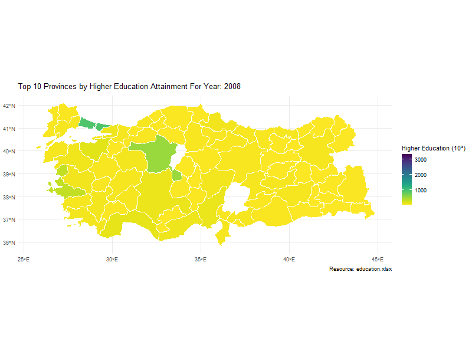
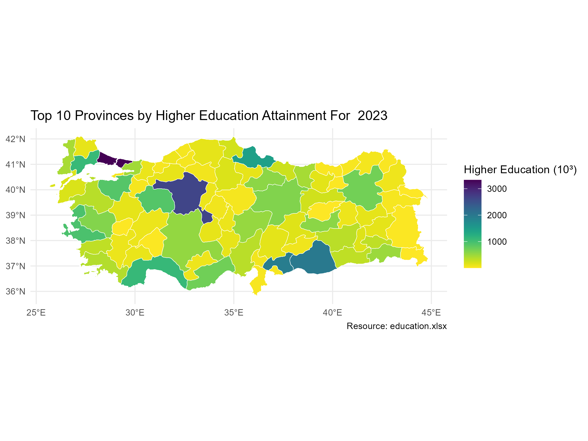
#Top 10 Provinces by Higher Education Attainment (Each Year)education |>filter(Educational_Status =="Higher Education") |>group_by(Year) |>slice_max(order_by = Total, n =10) |>ungroup() |>ggplot(aes(x =reorder_within(Province, Total,Year), y = Total /1000,width =0.5)) +geom_bar(stat ="identity", fill ="orange") +coord_flip() +facet_wrap(~Year, scales ="free_y") +scale_x_reordered() +labs(title ="Top 10 Provinces by Higher Education Attainment (Each Year)",x ="Province",y ="Total (10³)" ) +theme_minimal()+theme(axis.text.x =element_text(angle =90, hjust =1, size =6),axis.text.y=element_text(size=5.5))
Based on the graphs presented below, several observations can be made:
Over the years, the number of individuals with no formal education has generally increased, reaching its peak in 2022 before starting to decline.
The provinces appearing in the top 10 list for individuals with no education often overlap with those that also rank high in higher education attainment. A major reason for this could be the concentration of Turkey’s population in these large metropolitan areas.
education |>filter(Educational_Status =="No School Completed") |>group_by(Year) |>slice_max(order_by = Total, n =10) |>ungroup() |>ggplot(aes(x =reorder_within(Province, Total,Year), y = Total/1000 ,width =0.5)) +geom_bar(stat ="identity", fill ="darkgreen") +coord_flip() +facet_wrap(~Year, scales ="free_y") +scale_x_reordered() +labs(title ="Top 10 Provinces by No School Attainment (Each Year)",x ="Province",y ="Total (10³)" ) +theme_minimal()+theme(axis.text.x =element_text(angle =90, hjust =1, size =6),axis.text.y=element_text(size=5.5))
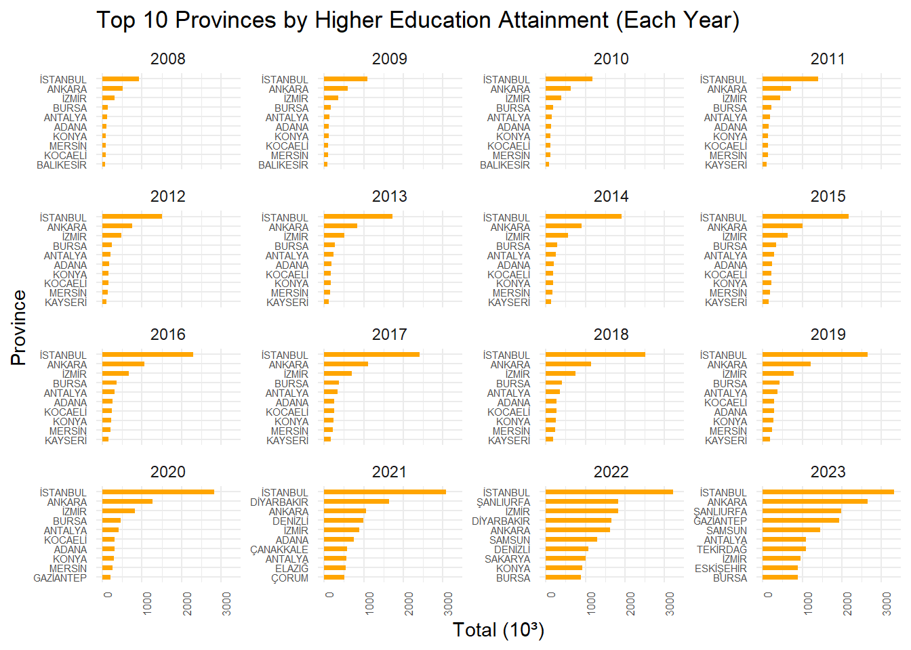
After examining the number of individuals with no formal education and those with higher education across provinces, the next step involves incorporating the gender dimension into the analysis. Question: What does the comparison between female and male proportions tell us about the presumed educational disadvantage faced by women?
Below, a series of maps illustrate the percentage of women and men with no formal education across provinces over time. The visualizations show that, in recent years, the number of men with no education has begun to surpass that of women in many provinces.
Does this observation indicate that the educational disadvantage has shifted over time to affect men more significantly?
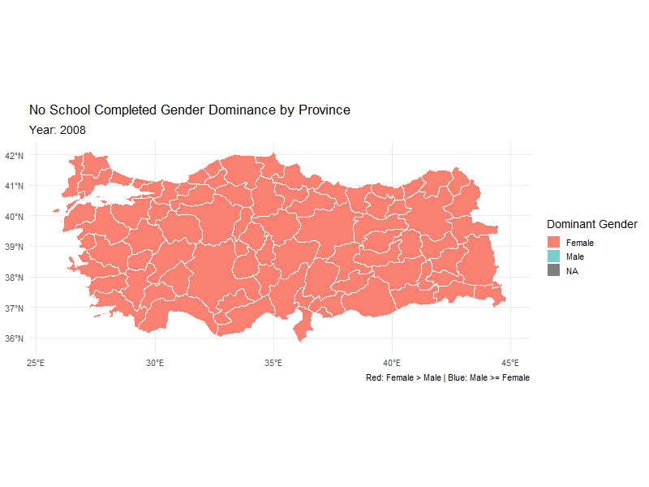
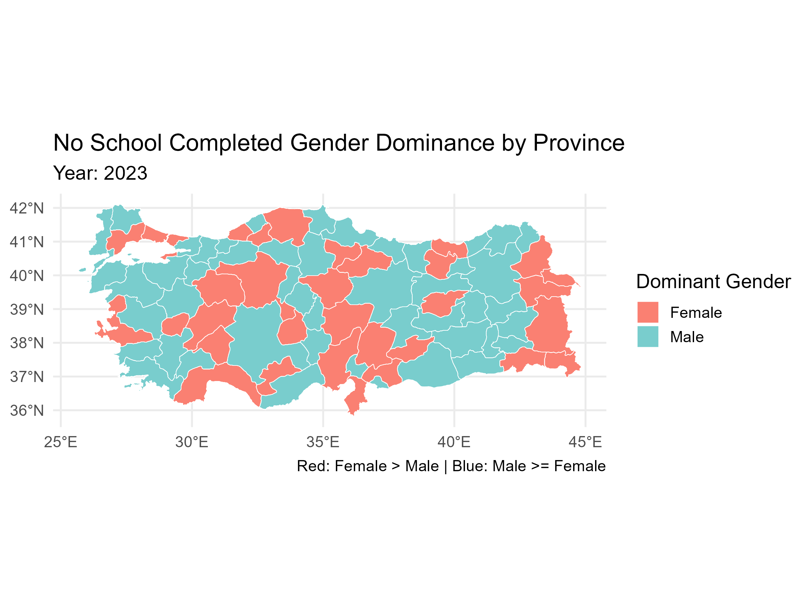
To further investigate the findings from the map above, we can examine the gender distribution across different education levels (aggregated for all years at the national level) using the chart below.
Contrary to our earlier observation, the chart reveals that 57.48% of individuals with no formal education are women.
So, what do these seemingly conflicting results actually tell us?
They suggest that, overall, the number of women who have never received any formal education is significantly higher than that of men, even if recent trends indicate a growing number of uneducated men in certain regions.
education |>group_by(Educational_Status) |>summarise(Male =sum(Male),Female =sum(Female)) |>mutate(Total = Male + Female,Male = Male / Total *100,Female = Female / Total *100) |>pivot_longer(cols =c("Male", "Female"), names_to ="Gender", values_to ="Percentage") |>ggplot(aes(x = Educational_Status, y = Percentage, fill = Gender)) +geom_bar(stat ="identity", position ="dodge") +labs(title ="Educational vs Gender (Country wise)", x ="Educational Status", y ="Percentage")+geom_text_repel(aes(label =round(Percentage,2)), color ="black", size =3.5)+theme(axis.text.x =element_text(angle =30, hjust =1, size =7))
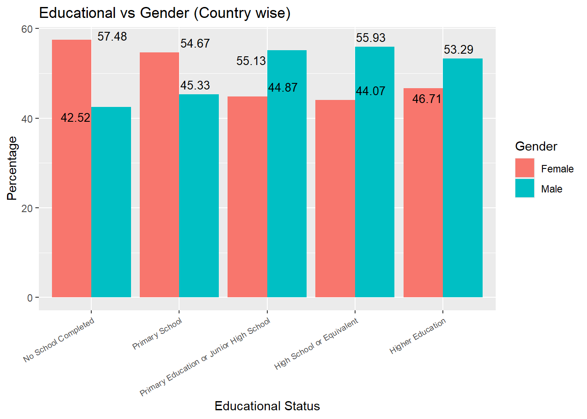
To provide a more detailed analysis of the “byeducation” dataset, the following questions will be examined.
To closely examine this dataset, the first step is to explore the relationship between education levels and life satisfaction. Question: Which education level group reports higher life satisfaction, and which one reports the lowest?
Based on the results obtained, the following observations can be made:
Within a given year, the distribution of education levels across happiness categories shows relatively similar proportions.
Individuals with higher education have the highest average life satisfaction “Happy”, whereas those with only primary school education report the lowest.
Among those who identify as “Unhappy,” the largest proportion consists of individuals with no formal education, while the smallest share belongs to those with higher education.
Individuals with a high school education or with primary/junior high school education tend to display similar patterns, showing closely aligned averages across the different happiness levels.
byeducation |>select(everything()) |>pivot_longer(cols =c("No School Completed","Primary School","Primary Education or Junior High School","High School or Equivalent","Higher Education"), names_to ="Education_Level", values_to ="Percentage") |>ggplot(aes(x = Happiness_Level, y = Percentage, color = Education_Level)) +geom_boxplot() +labs(title ="Happy percentage vs Education Level",x ="Happiness_Level", y ="Percentage (%)", color ="Education_Level") +theme_minimal()
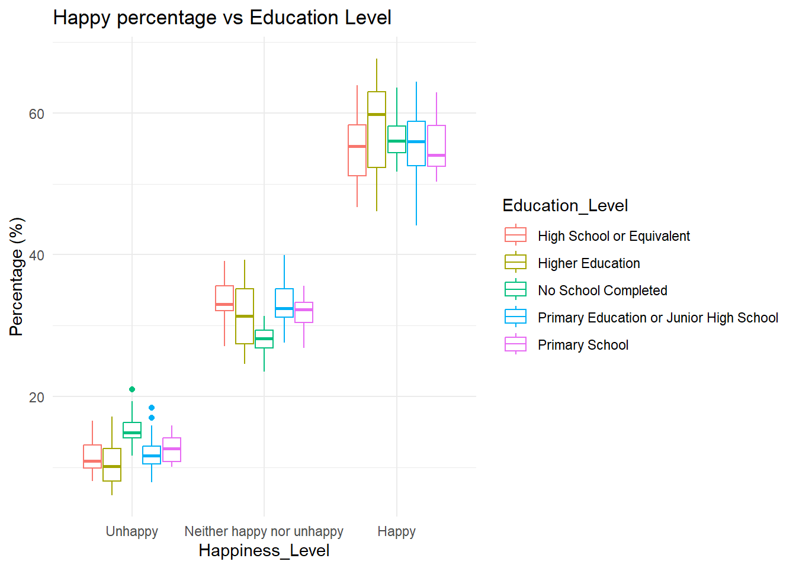
To provide a more detailed analysis of the “bygender” dataset, the following questions will be examined.
To closely examine the dataset, the first step is to explore the relationship between education levels and happiness levels. Question: How does the percentage of happiness vary for each gender?
Based on the results obtained, the following observations can be made:
Within a given year, the distribution of happiness levels across genders shows similar proportions for both men and women.
Women report the highest average life satisfaction “Happy”, while men tend to have the lowest average satisfaction.
The majority of individuals who identify as “Unhappy” are men.
There is a notable difference between the average happiness percentages for men and women, particularly at the “Happy” level.
bygender |>select( everything()) |>pivot_longer(cols =c("Male", "Female"), names_to ="Gender", values_to ="Percentage") |>ggplot(aes(x = Happiness_Level, y = Percentage, color = Gender)) +geom_boxplot()+labs(title ="Happy percentage vs Gender",x ="Happiness_Level", y ="Percentage (%)", color ="Gender") +theme_minimal()
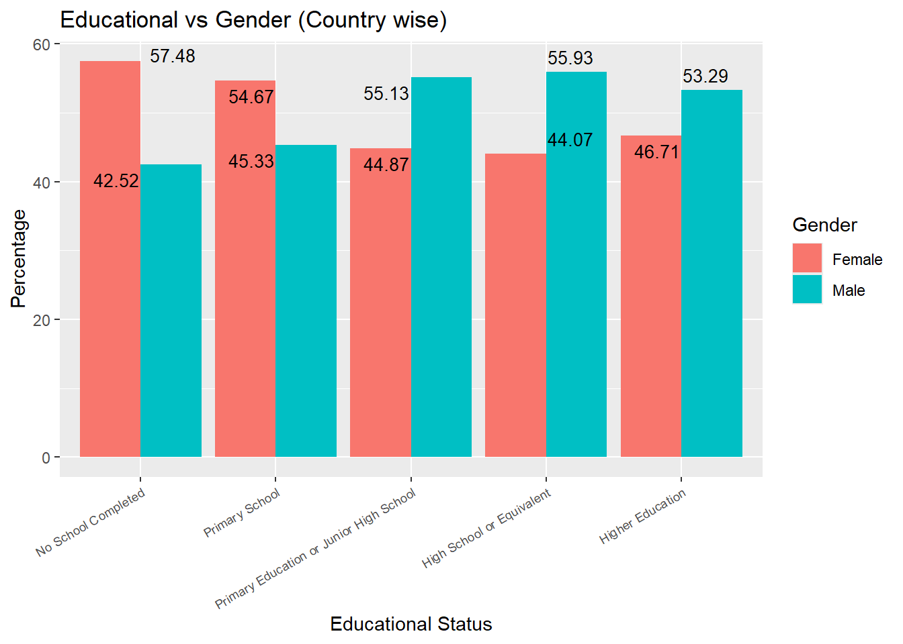
3.2 Trend Analysis
In this section, the behavior of different variables within the datasets over time will be examined. As in previous sections, the datasets will be analyzed separately, and the time-dependent behavior of the variables will be explored by addressing various research questions.
Analysis for “education” dataset
In the previous sections, we examined the top 10 provinces with the highest number of university graduates over different years. As the next step in the analysis, we can investigate the provinces where the rate of university graduates has increased most rapidly. Question: In which provinces has the rate of university graduates increased most rapidly?
Based on the chart below, the following observations can be made:
Consistent with our earlier findings, provinces such as Istanbul and Ankara, which appeared in the previous analysis, are also among the provinces that have shown the fastest growth in the number of individuals with higher education. One possible explanation for this is the large population size of these cities.
Istanbul, the province with the highest number of university graduates, has shown a steady increase between 2008 and 2023. Similarly, Izmir has also demonstrated consistent growth.
A particularly noteworthy observation is the sharp upward trend in Ankara, especially after 2020, where the growth rate increased significantly. A similar observation can be made for Konya and Bursa, though the growth rate in these cities is somewhat slower. This rapid increase, particularly after 2020, may be attributed to the growth in the number of universities in these cities and the migration they have received in recent years.
# A tibble: 10 × 2
Province slope
<chr> <dbl>
1 İSTANBUL 166314.
2 ANKARA 92572.
3 İZMİR 55971.
4 BURSA 29044.
5 KONYA 23179.
6 ADANA 23058.
7 KOCAELİ 22834.
8 ANTALYA 21437.
9 MERSİN 19919.
10 ESKİŞEHİR 16730.
top_provinces <- slope_by_province %>%slice_max(order_by = slope, n =5) %>%pull(Province)univ_trend %>%filter(Province %in% top_provinces) %>%ggplot(aes(x = Year, y = Total/1000, color = Province, group = Province)) +geom_smooth(method ="loess", se =FALSE, linewidth =1.2) +labs(title =" Provinces which rate of university graduates increased most rapidly",x ="Year", y ="Total Graduates (10³) ") +theme_minimal()
`geom_smooth()` using formula = 'y ~ x'
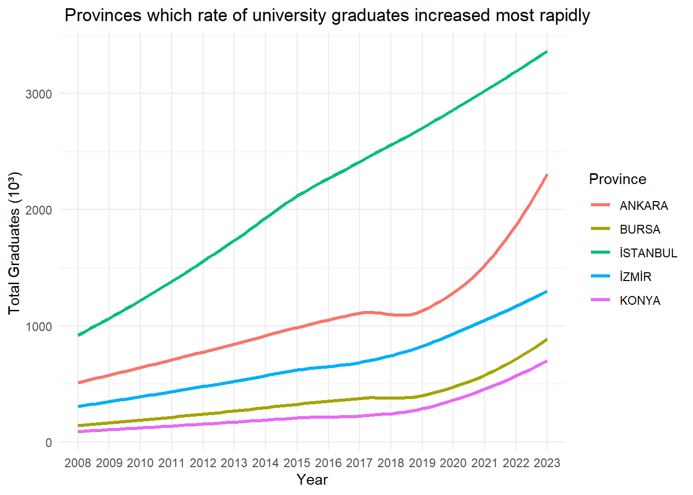
Analysis for “bygender” dataset
In the next step of our analysis, we can consider how life satisfaction has evolved over time for both men and women, based on the previously explored relationship between gender and happiness levels. Question: How has life satisfaction changed over time for men and women?
Based on the chart below and in line with our earlier findings, the following observations can be made:
It appears that women generally report higher levels of happiness than men, supporting the notion that men tend to be more unhappy than women.
In 2016, a decrease was observed in the percentage of individuals reporting high life satisfaction. This decline is mirrored by an increase in the percentage of individuals identifying as “unhappy” after 2016.
bygender_long <- bygender |>pivot_longer(cols =c("Male", "Female"), names_to ="Gender", values_to ="Percentage")ggplot(bygender_long, aes(x = Year, y = Percentage, color = Gender)) +geom_line(size =1.2) +geom_point(linewidth =2) +facet_wrap(~ Happiness_Level) +labs(title ="Life Satisfaction Trends by Gender and Level",x ="Year", y ="Percentage (%)",color ="Gender") +theme_minimal()
Warning: Using `size` aesthetic for lines was deprecated in ggplot2 3.4.0.
ℹ Please use `linewidth` instead.
Warning in geom_point(linewidth = 2): Ignoring unknown parameters: `linewidth`
We can conclude that there is a significant difference between men and women in terms of happiness levels. This conclusion can be further developed by examining whether the difference between men and women persists annually. Question: Does the difference in life satisfaction between men and women persist annually?
Based on the analysis below, the following observations can be made:
Negative values indicate that women are generally happier than men.
When examining the statistical significance of the difference (i.e., whether the difference in happiness between men and women shows a meaningful trend over time) through linear regression, the p-value = 0.046, which is less than 0.05, indicating that the difference is statistically significant. On average, the difference between men and women in happiness levels decreases by 0.24 points per year.
mutlu_df <- bygender |>filter(Happiness_Level =="Happy") |>pivot_longer(cols =c(Male, Female), names_to ="Gender", values_to ="Percentage")|>pivot_wider(names_from = Gender, values_from = Percentage)|>mutate(Difference = Male - Female) ggplot(mutlu_df, aes(x = Year, y = Difference)) +geom_line(color ="darkred", size =1.2) +geom_point(size =2, color ="darkred") +geom_hline(yintercept =0, linetype ="dashed") +geom_smooth(method ="lm", se =TRUE, color ="black", linetype ="dotted") +labs(title ="Trend of Gender Difference in Happiness Over Time",subtitle ="Black dotted line: linear trend",x ="Year", y ="Happiness Difference (Male - Female)") +theme_minimal()
`geom_smooth()` using formula = 'y ~ x'
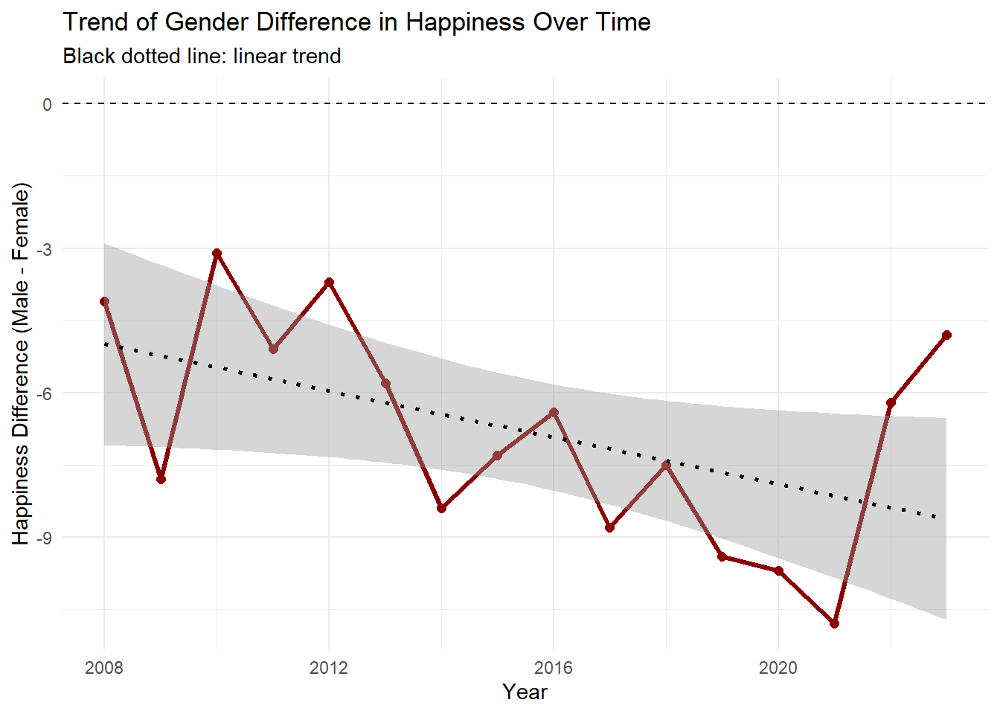
model <-lm(Difference ~ Year, data = mutlu_df)summary(model)
Call:
lm(formula = Difference ~ Year, data = mutlu_df)
Residuals:
Min 1Q Median 3Q Max
-2.6632 -1.7616 0.1562 1.2136 3.8206
Coefficients:
Estimate Std. Error t value Pr(>|t|)
(Intercept) 480.7669 223.5764 2.150 0.0495 *
Year -0.2419 0.1109 -2.181 0.0468 *
---
Signif. codes: 0 '***' 0.001 '**' 0.01 '*' 0.05 '.' 0.1 ' ' 1
Residual standard error: 2.045 on 14 degrees of freedom
Multiple R-squared: 0.2536, Adjusted R-squared: 0.2003
F-statistic: 4.756 on 1 and 14 DF, p-value: 0.04675
Similarly, the difference in happiness levels between men and women at the “Unhappy” level has also been examined for statistical significance. According to the results, since p = 0.0268, which is less than 0.05, the difference is statistically significant. On average, the difference between men and women in the “Unhappy” category increases by 0.17 points per year.
mutsuz_df <- bygender |>filter(Happiness_Level =="Unhappy") |>pivot_longer(cols =c(Male, Female), names_to ="Gender", values_to ="Percentage")|>pivot_wider(names_from = Gender, values_from = Percentage)|>mutate(Difference = Male - Female) ggplot(mutsuz_df, aes(x = Year, y = Difference)) +geom_line(color ="darkred", size =1.2) +geom_point(size =2, color ="darkred") +geom_hline(yintercept =0, linetype ="dashed") +geom_smooth(method ="lm", se =TRUE, color ="black", linetype ="dotted") +labs(title ="Trend of Gender Difference in Unhappiness Over Time",subtitle ="Black dotted line: linear trend",x ="Year", y ="Happiness Difference (Male - Female)") +theme_minimal()
`geom_smooth()` using formula = 'y ~ x'
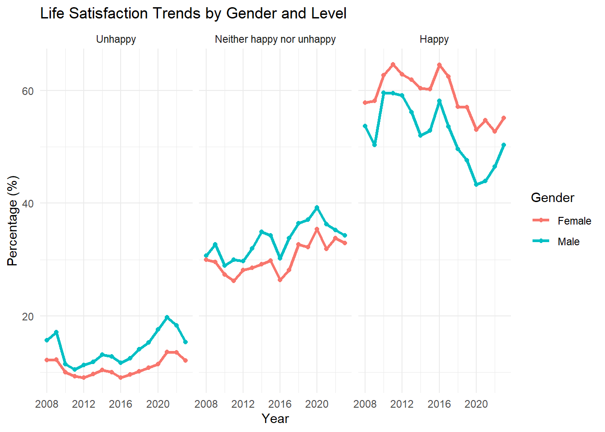
model <-lm(Difference ~ Year, data = mutsuz_df)summary(model)
Call:
lm(formula = Difference ~ Year, data = mutsuz_df)
Residuals:
Min 1Q Median 3Q Max
-1.4704 -0.8468 -0.5268 0.6701 2.4760
Coefficients:
Estimate Std. Error t value Pr(>|t|)
(Intercept) -345.70574 141.18345 -2.449 0.0281 *
Year 0.17324 0.07005 2.473 0.0268 *
---
Signif. codes: 0 '***' 0.001 '**' 0.01 '*' 0.05 '.' 0.1 ' ' 1
Residual standard error: 1.292 on 14 degrees of freedom
Multiple R-squared: 0.304, Adjusted R-squared: 0.2543
F-statistic: 6.116 on 1 and 14 DF, p-value: 0.02683
Analysis for “byeducation” dataset
We have previously gathered some insights regarding the relationship between education levels and happiness levels in the dataset. As the next step in this analysis, we can consider how life satisfaction has evolved over time for different education levels. Question: How has life satisfaction percentage changed over level of education?
Based on the analysis provided below, the following observations can be made:
The percentage of individuals who report being happy has decreased across all education levels over time.
The smallest decrease in happiness levels has been observed among individuals without any education, with an average decrease of just 0.0089, which is a very low rate.
The education level with the greatest decline in life satisfaction over time is among individuals with higher education. For this group, the happiness percentage has decreased by an average of 1.369 points per year.
edu_happy <- byeducation |>filter(Happiness_Level=="Happy")|>pivot_longer(c(`No School Completed`,`Primary School`,`Primary Education or Junior High School`,`High School or Equivalent`,`Higher Education`),names_to ="Educational_Status",values_to ="Percentage") edu_happy$Educational_Status <-factor( edu_happy$Educational_Status,levels =c("No School Completed","Primary School","Primary Education or Junior High School","High School or Equivalent","Higher Education",order=TRUE))edu_trends <- edu_happy %>%group_by(Educational_Status) %>%do(tidy(lm(Percentage ~ Year, data = .))) %>%filter(term =="Year") %>%arrange(desc(estimate))edu_trends |>kbl() |>kable_styling()
Educational_Status
term
estimate
std.error
statistic
p.value
No School Completed
Year
-0.0882828
0.1888264
-0.4675341
0.6473120
Primary School
Year
-0.3969668
0.1949510
-2.0362384
0.0611031
High School or Equivalent
Year
-0.8323926
0.2130358
-3.9072905
0.0015789
Primary Education or Junior High School
Year
-0.8840392
0.2311315
-3.8248326
0.0018575
Higher Education
Year
-1.3692589
0.1712698
-7.9947499
0.0000014
ggplot(edu_happy, aes(x = Year, y = Percentage, color = Educational_Status)) +geom_line() +labs(title ="Happiness Trend by Education Level Over Years")+theme_minimal()
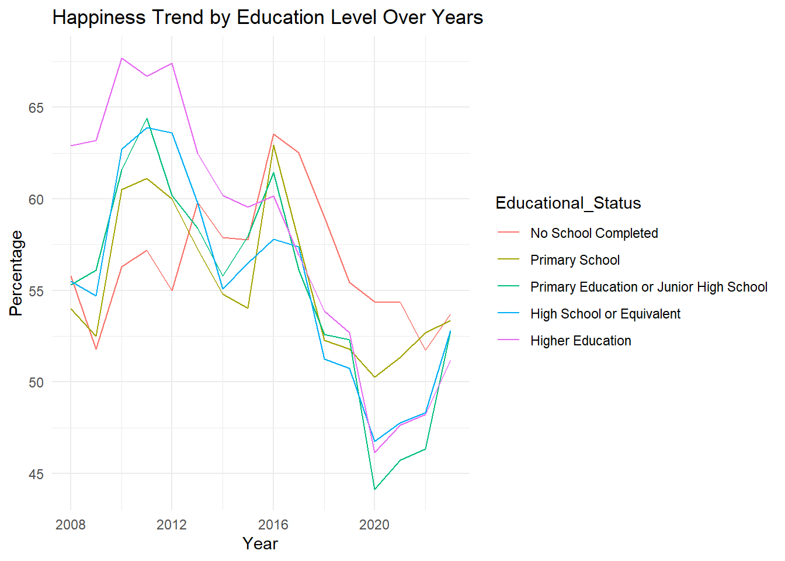
ggplot(edu_happy, aes(x = Year, y = Percentage, color = Educational_Status)) +geom_point() +geom_smooth(method ="lm", se =FALSE, size =1.2) +labs(title ="Life satisfaction percentage changed over level of education",x ="Year", y ="Happy (%)") +theme_minimal()
`geom_smooth()` using formula = 'y ~ x'
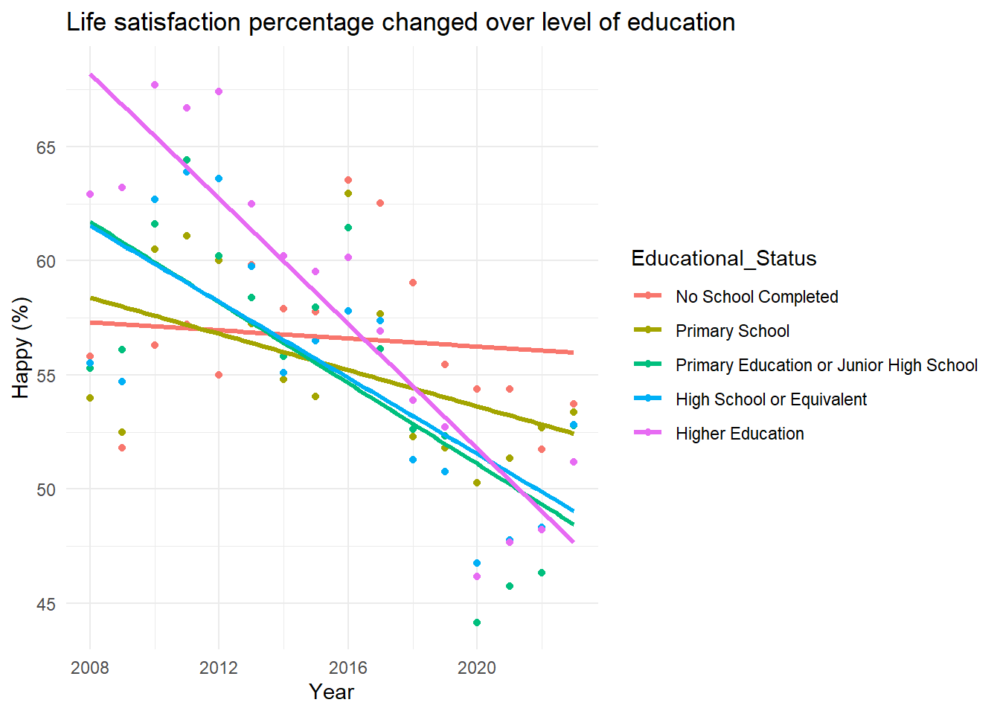
The same analysis has been conducted for the “Unhappy” happiness level, and the following results were found:
The percentage of individuals who identify as “Unhappy” has increased over time for all education levels, except for those without any education.
For individuals without any education, the percentage of those who identify as “Unhappy” has decreased over time, with an average decrease of 0.065 per year.
The education level with the largest increase in the percentage of individuals who identify as “Unhappy” over time is higher education. For this group, the percentage of those who report being “Unhappy” has increased by an average of 0.45 points per year.
edu_unhappy <- byeducation |>filter(Happiness_Level=="Unhappy")|>pivot_longer(c(`No School Completed`,`Primary School`,`Primary Education or Junior High School`,`High School or Equivalent`,`Higher Education`),names_to ="Educational_Status",values_to ="Percentage") edu_unhappy$Educational_Status <-factor( edu_unhappy$Educational_Status,levels =c("No School Completed","Primary School","Primary Education or Junior High School","High School or Equivalent","Higher Education",order=TRUE))edu_trends <- edu_unhappy %>%group_by(Educational_Status) %>%do(tidy(lm(Percentage ~ Year, data = .))) %>%filter(term =="Year") %>%arrange(desc(estimate))edu_trends |>kbl() |>kable_styling()
Educational_Status
term
estimate
std.error
statistic
p.value
Higher Education
Year
0.4521631
0.1235502
3.6597527
0.0025746
Primary Education or Junior High School
Year
0.3733905
0.1286275
2.9028818
0.0115759
High School or Equivalent
Year
0.3401795
0.1121412
3.0334923
0.0089378
Primary School
Year
0.1823240
0.0966591
1.8862576
0.0801774
No School Completed
Year
-0.0656706
0.1318412
-0.4981037
0.6261441
ggplot(edu_unhappy, aes(x = Year, y = Percentage, color = Educational_Status)) +geom_line() +labs(title ="Unhappiness Trend by Education Level Over Years")+theme_minimal()
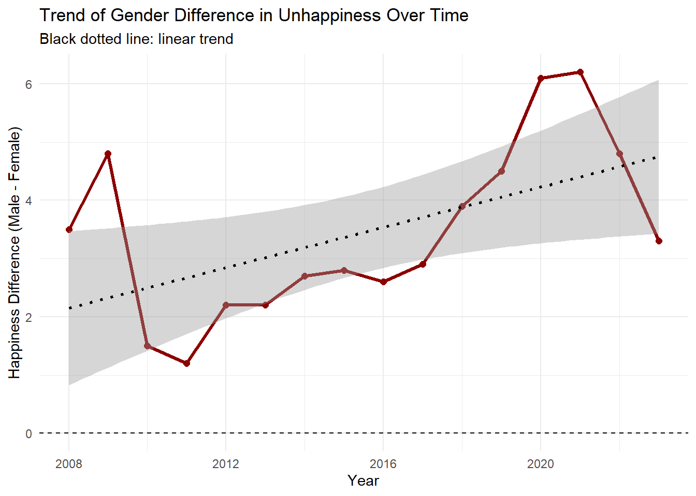
ggplot(edu_unhappy, aes(x = Year, y = Percentage, color = Educational_Status)) +geom_point() +geom_smooth(method ="lm", se =FALSE, size =1.2) +labs(title ="Life satisfaction percentage changed over level of education",x ="Year", y ="Unhappy (%)") +theme_minimal()
`geom_smooth()` using formula = 'y ~ x'
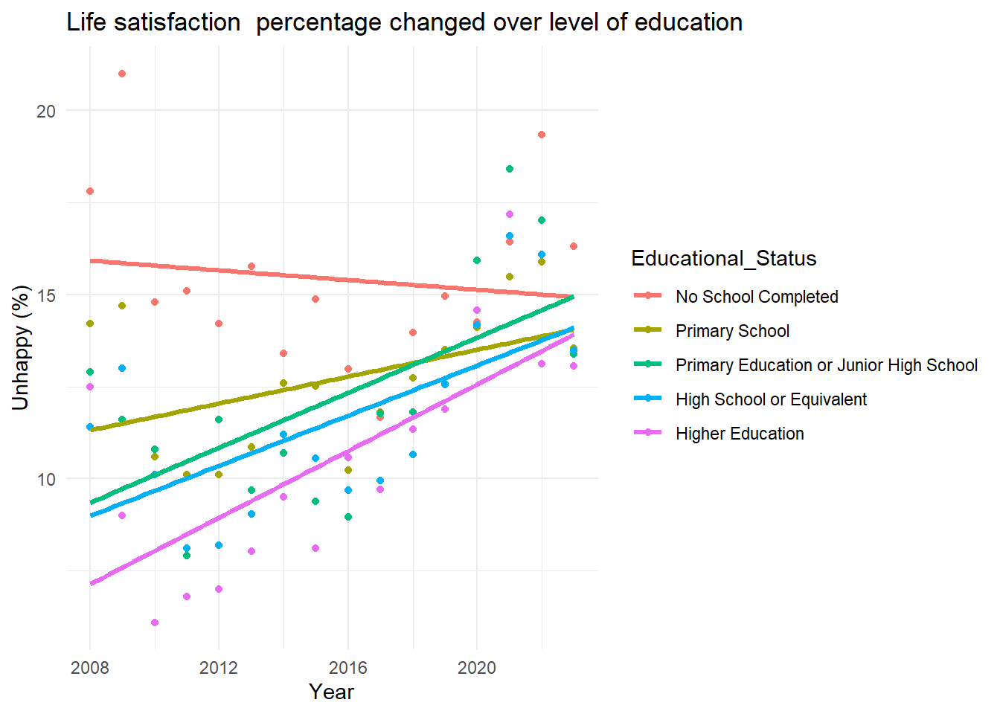
3.3 Model Fitting
In this section, the primary objective of the research will be addressed by statistically examining the relationships between variables that influence individuals’ happiness levels, their interconnections, and their association with happiness levels in more detail. Based on the findings, predictive models for the future will be developed. This approach will be carried out, as in previous steps, by answering key questions.
Question: Is there a significant difference between educational level and happiness level? (using the “byeducation” dataset)
According to the Chi-square test[3], the p-value is 2.2e-16, which is less than 0.05. Therefore, it can be concluded that happiness levels are significantly associated with education level.
#df<- byeducation |>pivot_longer(c(`No School Completed`,`Primary School`,`Primary Education or Junior High School`,`High School or Equivalent`,`Higher Education`),names_to ="Educational_Status",values_to ="Percentage") |>mutate(Estimated_Count =round(Percentage *1000/100))summary_table <- df %>%group_by(Happiness_Level, Educational_Status) %>%summarise(Count =sum(Estimated_Count), .groups ="drop")contingency_matrix <- summary_table %>%pivot_wider(names_from = Happiness_Level, values_from = Count) %>%column_to_rownames("Educational_Status") %>%as.matrix()chisq.test(contingency_matrix)
Question: Is there a significant difference between gender and happiness level? (using the “bygender” dataset)
According to the Chi-square test, the p-value is 2.2e-16, which is less than 0.05. Therefore, it can be concluded that happiness levels are significantly associated with gender.
It has once again been observed that happiness level (Happy) is influenced by both education level and gender. In the next stage of the analysis, separate predictive models were developed to estimate happiness levels based on education and gender variables.
A predictive model for estimating the percentage of individuals who report being happy based on education level can be constructed in three different ways:
Model 1 assumes that happiness is influenced solely by education level.
Model 2 includes the effect of time (year) in addition to education level.
Model 3 incorporates the interaction between education level and time.
Based on the results, when comparing the Akaike Information Criterion (AIC) values of the models, Model 3 was found to have the lowest AIC, indicating the best fit to the data. This suggests that the interaction between education level and year should be included in the predictive model for estimating happiness levels.
Accordingly, the final model should include the statistically significant education levels — Primary Education or Junior High School, High School, and Higher Education — as well as their interactions with the year variable. Since the “Education_Level” variable is categorical, a reference category is selected when constructing the model, which is typically the first level. In this case, the reference category is the “No School Completed” category. The “Intercept”(β₀) value in the model output represents the average happiness percentage for “No School Completed” category, while the Other coefficients represent the difference between the average happiness percentage of the relevant education level and that of the ‘No School Completed’ category
The adequacy of the model was validated by analyzing whether the residuals conform to a normal distribution with Q-Q Plot and Anderson-Darling Normality Test [6].
happy_df_byeducation <- byeducation|>pivot_longer(cols =-c(Year, Happiness_Level),names_to ="Education_Level",values_to ="Percentage" ) |>filter(Happiness_Level =="Happy")|>mutate(Education_Level =factor(Education_Level, levels =c("No School Completed","Primary School","Primary Education or Junior High School","High School or Equivalent","Higher Education",order=TRUE)))model1 <-lm(Percentage ~ Education_Level, data = happy_df_byeducation)summary(model1)
Call:
lm(formula = Percentage ~ Education_Level, data = happy_df_byeducation)
Residuals:
Min 1Q Median 3Q Max
-11.789 -2.971 0.011 3.602 9.761
Coefficients:
Estimate Std. Error
(Intercept) 56.642 1.340
Education_LevelPrimary School -1.233 1.895
Education_LevelPrimary Education or Junior High School -1.565 1.895
Education_LevelHigh School or Equivalent -1.353 1.895
Education_LevelHigher Education 1.296 1.895
t value Pr(>|t|)
(Intercept) 42.262 <2e-16 ***
Education_LevelPrimary School -0.650 0.517
Education_LevelPrimary Education or Junior High School -0.826 0.412
Education_LevelHigh School or Equivalent -0.714 0.477
Education_LevelHigher Education 0.684 0.496
---
Signif. codes: 0 '***' 0.001 '**' 0.01 '*' 0.05 '.' 0.1 ' ' 1
Residual standard error: 5.361 on 75 degrees of freedom
Multiple R-squared: 0.04162, Adjusted R-squared: -0.009497
F-statistic: 0.8142 on 4 and 75 DF, p-value: 0.5201
ggplot(happy_df_byeducation, aes(x = Education_Level, y = Percentage)) +geom_boxplot(fill ="darkseagreen2") +labs(title ="Happy Percentage vs. Education Level",x ="Education Level", y ="Happy(%)") +theme_minimal()+theme(axis.text.x =element_text(angle =30, hjust =1, size =7))
model2 <-lm(Percentage ~ Education_Level + Year, data = happy_df_byeducation)summary(model2)
Call:
lm(formula = Percentage ~ Education_Level + Year, data = happy_df_byeducation)
Residuals:
Min 1Q Median 3Q Max
-9.4845 -2.4151 0.4029 2.6386 7.8886
Coefficients:
Estimate Std. Error
(Intercept) 1496.0883 203.9767
Education_LevelPrimary School -1.2328 1.4753
Education_LevelPrimary Education or Junior High School -1.5648 1.4753
Education_LevelHigh School or Equivalent -1.3533 1.4753
Education_LevelHigher Education 1.2962 1.4753
Year -0.7142 0.1012
t value Pr(>|t|)
(Intercept) 7.335 2.33e-10 ***
Education_LevelPrimary School -0.836 0.406
Education_LevelPrimary Education or Junior High School -1.061 0.292
Education_LevelHigh School or Equivalent -0.917 0.362
Education_LevelHigher Education 0.879 0.382
Year -7.057 7.70e-10 ***
---
Signif. codes: 0 '***' 0.001 '**' 0.01 '*' 0.05 '.' 0.1 ' ' 1
Residual standard error: 4.173 on 74 degrees of freedom
Multiple R-squared: 0.4271, Adjusted R-squared: 0.3884
F-statistic: 11.04 on 5 and 74 DF, p-value: 5.843e-08
model3 <-lm(Percentage ~ Education_Level * Year, data = happy_df_byeducation)summary(model3)
Call:
lm(formula = Percentage ~ Education_Level * Year, data = happy_df_byeducation)
Residuals:
Min 1Q Median 3Q Max
-6.9436 -2.1574 0.0044 2.6583 7.7300
Coefficients:
Estimate
(Intercept) 234.57621
Education_LevelPrimary School 620.91983
Education_LevelPrimary Education or Junior High School 1602.28219
Education_LevelHigh School or Equivalent 1498.40007
Education_LevelHigher Education 2583.10352
Year -0.08828
Education_LevelPrimary School:Year -0.30868
Education_LevelPrimary Education or Junior High School:Year -0.79576
Education_LevelHigh School or Equivalent:Year -0.74411
Education_LevelHigher Education:Year -1.28098
Std. Error t value
(Intercept) 404.91157 0.579
Education_LevelPrimary School 572.63143 1.084
Education_LevelPrimary Education or Junior High School 572.63143 2.798
Education_LevelHigh School or Equivalent 572.63143 2.617
Education_LevelHigher Education 572.63143 4.511
Year 0.20090 -0.439
Education_LevelPrimary School:Year 0.28411 -1.086
Education_LevelPrimary Education or Junior High School:Year 0.28411 -2.801
Education_LevelHigh School or Equivalent:Year 0.28411 -2.619
Education_LevelHigher Education:Year 0.28411 -4.509
Pr(>|t|)
(Intercept) 0.56423
Education_LevelPrimary School 0.28194
Education_LevelPrimary Education or Junior High School 0.00663 **
Education_LevelHigh School or Equivalent 0.01087 *
Education_LevelHigher Education 2.53e-05 ***
Year 0.66170
Education_LevelPrimary School:Year 0.28099
Education_LevelPrimary Education or Junior High School:Year 0.00658 **
Education_LevelHigh School or Equivalent:Year 0.01080 *
Education_LevelHigher Education:Year 2.56e-05 ***
---
Signif. codes: 0 '***' 0.001 '**' 0.01 '*' 0.05 '.' 0.1 ' ' 1
Residual standard error: 3.704 on 70 degrees of freedom
Multiple R-squared: 0.5729, Adjusted R-squared: 0.518
F-statistic: 10.43 on 9 and 70 DF, p-value: 4.852e-10
Anderson-Darling normality test
data: residuals
A = 0.31572, p-value = 0.5353
ornek<-data.frame(Education_Level =factor(c("No School Completed","Primary School","Primary Education or Junior High School","High School or Equivalent","Higher Education"),levels =levels(happy_df_byeducation$Education_Level) ),Year=rep(2024:2026,each=5))veri<-data.frame(predict(model3, newdata = ornek))ggplot(happy_df_byeducation, aes(x = Year, y = Percentage, color = Education_Level)) +geom_line() +labs(title ="Happiness Trend by Education Level Over Years")+theme_minimal()
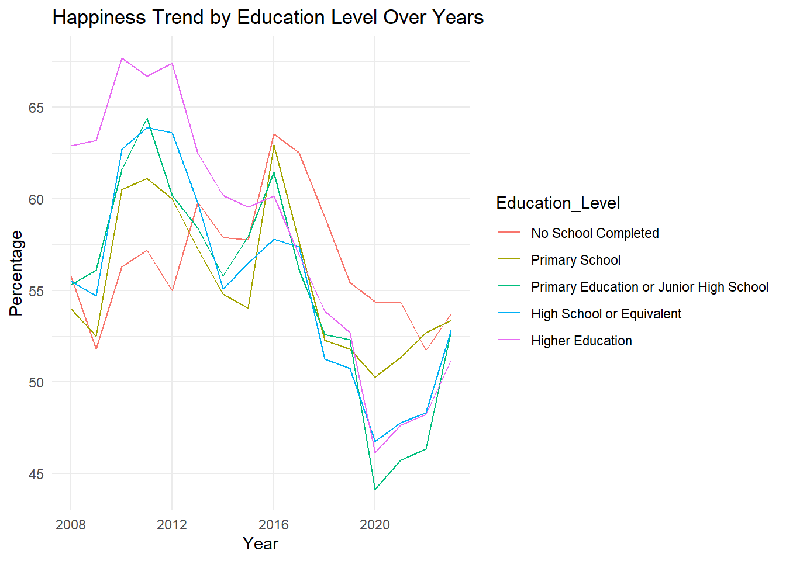
Gender-Based Happiness Level Prediction Model;
The prediction model for happiness percentages based on gender can be established in three different ways.
Model 1 assumes that the happiness rate is only affected by gender.
Model 2 includes the effect of time in the prediction model.
Model 3 adds the interaction between gender and time to the prediction model.
Based on the results, when the AIC (Akaike Information Criterion) [4] values of the models are compared, it is observed that the model that best explains the data is Model 2, which has the lowest AIC value. Therefore, it can be concluded that the effect of the year should be included in the constructed prediction model.
Thus, in the prediction model for happiness percentage, the significant variables, “GenderFemale” (which takes a value of 0 for Male and 1 for Female) and “Year”, should be included. Since the “Gender” variable is categorical, a reference category is selected when constructing the model, which is typically the first level. In this case, the reference category is the “Male” category. The “Intercept”(β₀) value in the model output represents the average happiness percentage for males, while the “GenderFemale” coefficient indicates the difference in the average happiness percentage between females and males.
The adequacy of the model was validated by analyzing whether the residuals conform to a normal distribution with Q-Q Plot and Anderson-Darling Normality Test.
Anderson-Darling normality test
data: residuals
A = 0.22885, p-value = 0.793
4. Results and Key Takeaways
In this study, three different datasets were analyzed to investigate the direction and magnitude of the effects of factors such as gender and educational attainment on individuals’ self-reported happiness. These datasets provide information on the total number of individuals by education level across different provinces of Turkey over the years, as well as gender distribution, and the levels of happiness individuals reported over time based on their education level and gender. The study was conducted using this information.
During the analysis phase, the first step involved examining the structure and trends of the variables to gain more detailed insight into the data. These initial observations were enriched further by exploring how the variables behaved over time. Finally, the effects of the variables on happiness percentages were discussed, and regression models based on gender and education level were developed to predict individuals’ likelihood of reporting happiness.
The key findings from the analysis are summarized below:
Over time, Istanbul, Ankara, and Izmir were identified as the provinces with the [greatest increase in individuals who either had no formal education or had completed university and higher education. While the increase in higher education levels in Istanbul and Izmir was more stable, Ankara saw a rapid rise, especially after 2020. On a national scale, the majority of individuals without formal education or with only primary education are women. In contrast, the opposite is true for higher education levels, where men are in the majority.
Individuals who identified themselves as happy were mostly those with higher education, whereas those who identified as unhappy were predominantly individuals without any formal education. However, the percentage of individuals reporting happiness has decreased across all education levels over time. The smallest decrease occurred among those with no formal education (−0.0089), while the largest decrease was among those with higher education (−1.369). For individuals reporting unhappiness, the percentage decreased over time only for those without education (−0.065), while it increased across all other education levels. The highest increase in unhappiness was observed among individuals with higher education (+0.45).
Individuals who identified themselves as happy were mostly women, while those who reported being unhappy were mostly men. In addition, the difference in happiness rates between men and women who reported being happy has decreased by an average of 0.24 points per year. On the other hand, the difference between men and women who reported being unhappy has increased by approximately 0.17 points annually.
To estimate happiness percentages, various regression models were developed based on gender and education level. Models including both main effects and interaction terms for relevant factors were compared. The best-fitting model was identified based on the Akaike Information Criterion (AIC). In the gender-based model, the inclusion of the time variable (year) alongside gender improved the model fit. In the education-level model, main effects for primary school, high school, and higher education levels, as well as their interactions with time, were included in the model specification.
According to these results, it is seen that educational disadvantage, especially in recent years, affects not only women but also men. The reasons for this should be considered from different perspectives and steps should be taken towards a solution. The level of education that individuals have creates a difference in their perspective and expectations on life and the level of happiness they define themselves in this way changes to a great extent. The fact that the percentage of people who do not receive any education feeling unhappy has increased over time, even if only slightly, has actually proven the saying that ignorance is bliss, the meaning of which we examine from a different perspective. Although women seem happier in general in the country, it should be approached with skepticism as to whether this reflects the truth in the living conditions we live in. When approached with this suspicion, the real truth is that the difference in happiness between men and women decreases over time, and women feel unhappier day by day.
*Assistance from ChatGPT was utilized at certain parts of this study.
The mini research paper related to this study can be accessed here.
References
1.Turkish Statistical Institute (TURKSTAT). “Life Satisfaction Survey, 2023”. Retrieved from https://data.tuik.gov.tr/ (accessed May, 2025)
2.Turkish Statistical Institute (TURKSTAT).(2024). “Population Statics Portal, 2024”. Retrieved from https://nip.tuik.gov.tr/ (accessed May, 2025)
3.K. Pearson, “On the criterion that a given system of deviations from the probable in the case of a correlated system of variables is such that it can be reasonably supposed to have arisen from random sampling,” The London, Edinburgh, and Dublin Philosophical Magazine and Journal of Science, vol. 50, no. 302, pp. 157–175, 1900.
4.H. Akaike, “A new look at the statistical model identification,” IEEE Transactions on Automatic Control, vol. 19, no. 6, pp. 716–723, 1974.
5.D. Firth and R. Menezes, “Quasi-variances,” Biometrika, vol. 91, no. 1, pp. 65–80, 2004.
6.T. W. Anderson and D. A. Darling, “A test of goodness of fit,” Journal of the American Statistical Association, vol. 49, no. 268, pp. 765–769, 1954.